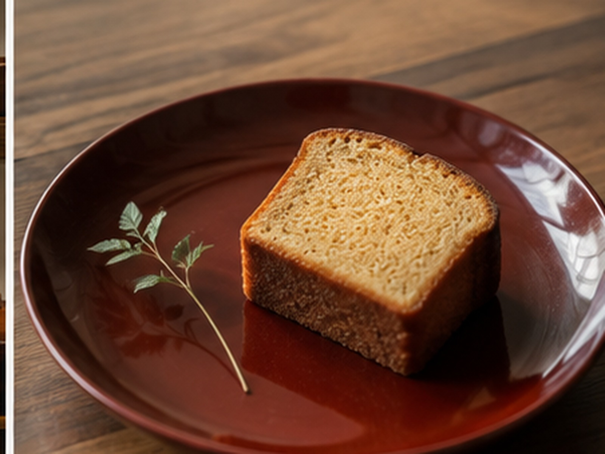
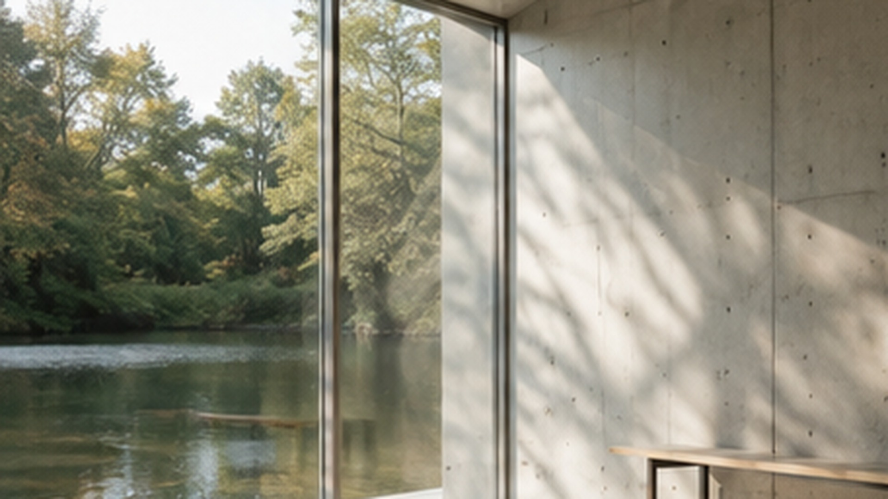
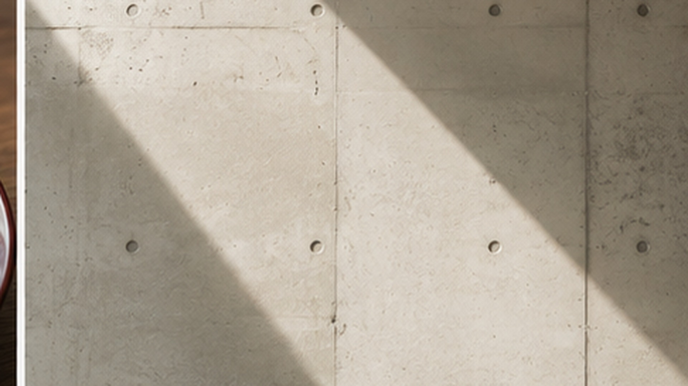
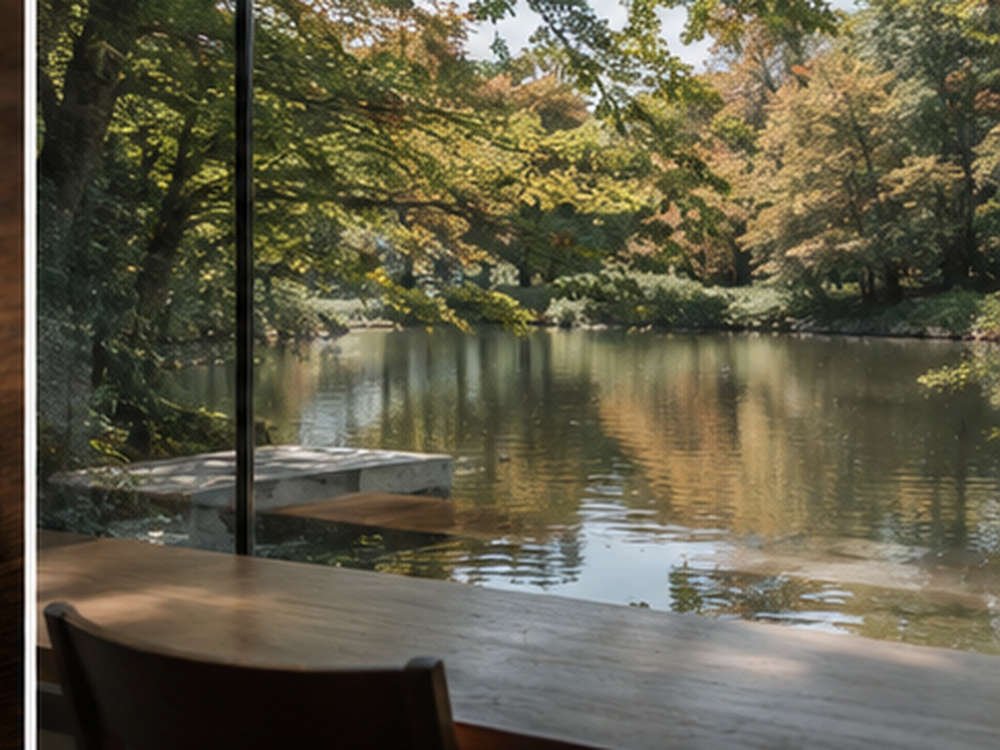
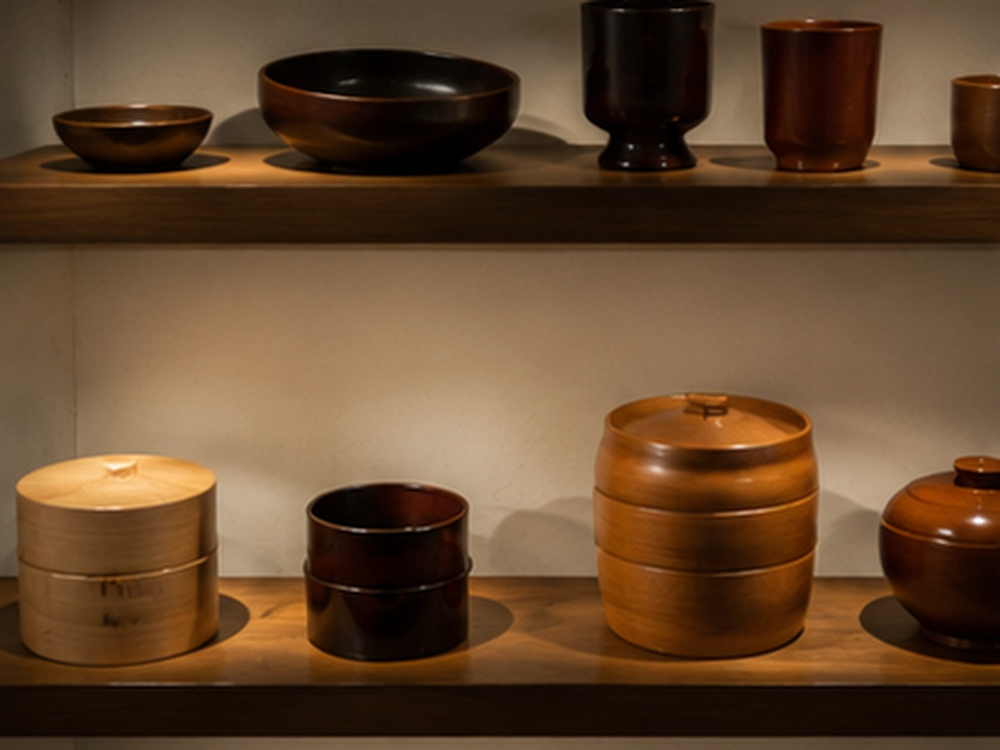
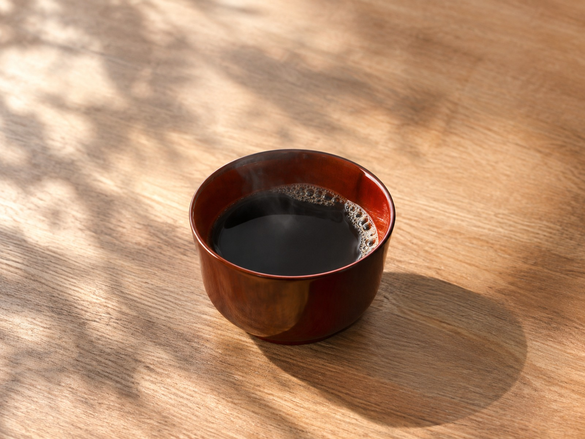

美術館オリジナルの
川連漆器で味わう
カフェで使用しているコーヒーカップとケーキ皿は、当美術館オリジナルのもの。国の伝統的工芸品である川連漆器が使われています。
お客様にとっての価値：器そのものが秋田の工芸品。飲みものを頼むだけで、手のなかで工芸に触れる時間になります。

MuseumCafe&Shop 光風
秋田市中通・秋田県立美術館 2階
安藤忠雄建築研究所が設計した美術館の2階。水庭と千秋公園を望む窓辺で、秋田の伝統的工芸品・川連漆器の器に注がれた一杯を味わえるミュージアムカフェです。
※ 本ページは店舗運営者様へのご提案用に作成したもので、公式サイトではありません。
※ 掲載写真はすべてイメージ画像です
CONCEPT
展示を見終えたあと、感じたことを言葉にする前のしずかな時間。光風は、その余韻ごと受けとめる場所にあります。

秋田県立美術館は、安藤忠雄建築研究所の設計、清水建設株式会社の施工により建てられた、地下1階・地上3階の建物です。2階には大壁画ギャラリーとミュージアムラウンジが配置され、光風はその階にあります。
館内では持ち込みの飲食をご遠慮いただいているため、この建物のなかで一息つける場所は光風だけです。展示のあいだの休憩にも、鑑賞後のしめくくりにも使えます。
STRENGTH
秋田県立美術館の公式案内で確認できる内容をもとに整理しました。

カフェで使用しているコーヒーカップとケーキ皿は、当美術館オリジナルのもの。国の伝統的工芸品である川連漆器が使われています。
お客様にとっての価値：器そのものが秋田の工芸品。飲みものを頼むだけで、手のなかで工芸に触れる時間になります。

建物は安藤忠雄建築研究所の設計。2階には大壁画ギャラリーとミュージアムラウンジがあり、光風は水庭と千秋公園を望む位置にあります。
お客様にとっての価値：席に着くこと自体が体験になります。建築と景色を、腰を落ち着けて味わえます。

併設のショップでは、樺細工、曲げわっぱ、川連漆器など、秋田が誇る伝統工芸品を陳列・販売しています。
お客様にとっての価値：カフェで使った器の産地や作りを、そのまま隣で見て選べます。贈りもの探しの場としても使えます。
BACKGROUND
創業者個人のエピソードは公式情報で確認できなかったため、確認できた事実にもとづき、店舗の成り立ちと大切にされていることを整理しました。
運営会社である株式会社光風舎が設立されます。
秋田県立美術館の新館が建設されます。設計は安藤忠雄建築研究所、施工は清水建設株式会社。鉄筋コンクリート造、地下1階・地上3階、延床面積3,746.66平方メートル。
秋田県立美術館が現在地へ移転・リニューアル。あわせて MuseumCafe&Shop 光風 が開店します。
美術館の一部として生まれた店であることが、光風の性格をよく表しています。器に川連漆器を選び、ショップに樺細工や曲げわっぱを並べる。そのどちらも、秋田の手仕事を訪れた人に手渡すという、美術館と同じ方向を向いた選び方です。
PICK UP
公式情報で最も特徴的に紹介されている要素をもとに、1つを選びました。

光風では、各種お飲物のほか、ケーキを用意しています。そして使われるコーヒーカップとケーキ皿は、美術館オリジナルの川連漆器です。
川連漆器は国の伝統的工芸品。漆の器は手にしたときの軽さと、口あたりのやわらかさが陶器とは違います。同じコーヒーでも、飲み終えるまでの時間が少し変わります。
展示を見たあとに、工芸の器で一杯を飲む。この流れが1つの建物のなかで完結することが、光風のいちばんの持ち味だと考えます。
HOW TO SPEND
公式情報で確認できる範囲で、3つの使い方を整理しました。
大壁画ギャラリーと同じ2階。見たものの余韻が残っているうちに座れます。閉館30分前のラストオーダーにご注意ください。
水庭と千秋公園を望む窓辺。季節によって見えるものが変わるので、同じ席でも違う時間になります。
併設ショップには樺細工・曲げわっぱ・川連漆器が並びます。カフェで実際に使った器から選べるのは、この場所ならではです。
はじめて訪れる方が「どう過ごせばいいか」を決めやすくするための、5つの質問に答える案内サービスの試作です。実際にこのページ上で操作できます。
所要およそ1分。個人情報の入力はありません。
「絵を見たあとに寄りたい」「景色を眺めたい」「贈りものを探したい」——目的によって、光風での過ごし方は変わります。いくつかの質問から、今日に合う過ごし方をご案内します。
質問 1 / 5
IDEA ／ 今後の展開案
いずれも現在提供されているサービスではありません。店舗運営者様向けの提案です。
開催中の展覧会をテーマにした飲みもの・菓子を、会期のあいだだけ提供する案です。展示を見た人がそのまま話題にできる形をつくれます。
相性のよさ：光風は美術館の内部にあり、来店者と展覧会の来場者がほぼ重なります。展示替えのたびに来店理由が生まれます。
スマートフォンから注文し、受け取る時間を指定できる仕組みの案です。展示を見る前に注文しておき、見終えた時間に受け取る使い方を想定しています。
相性のよさ：ラストオーダーが閉館30分前のため、鑑賞に集中していると間に合わないことがあります。その取りこぼしを減らせます。
INFORMATION
秋田県立美術館の公式案内で確認できた内容を掲載しています。
ご来館時のお願い（美術館公式案内より）